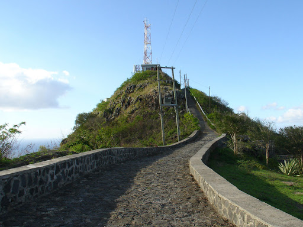
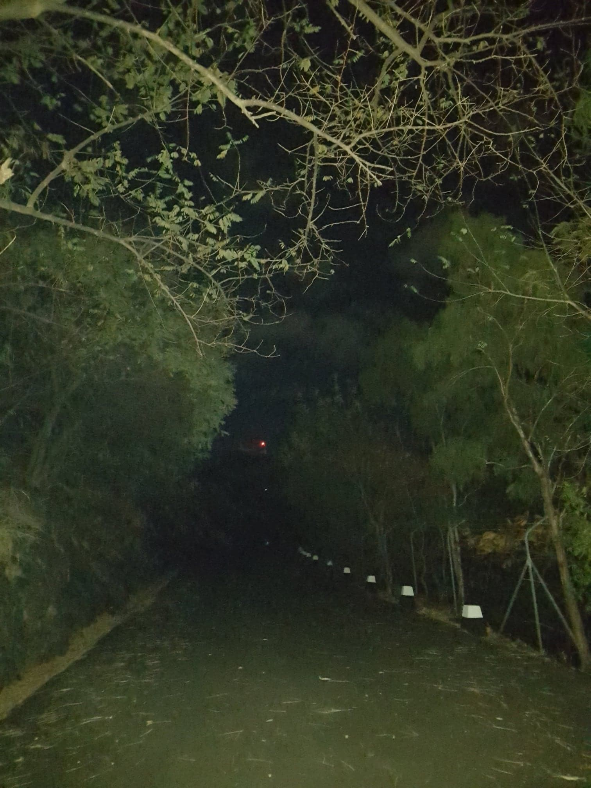
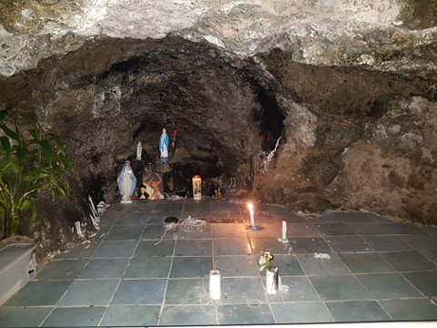
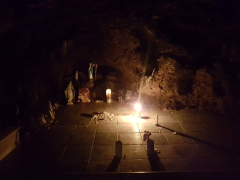
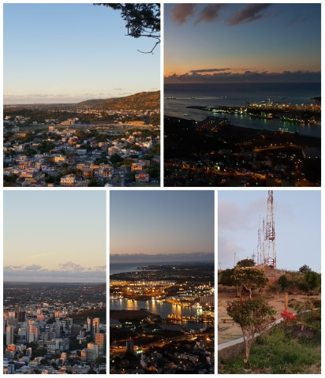
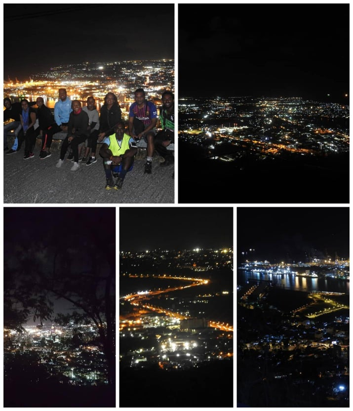

Mo trouv Signaux signale, Pas bato talaba ki rentre” – Michel Legris
Situated in Port Louis, Signal Mountain or Mt Signaux served as a signal-post to guide ships in the harbor during the French period which is now replaced by antennas.

The mountain is renowned for its brilliant health track for the inhabitants of the locality or people working in the vicinity. The tarred road of about 3km and is a continuous ascending till to the peak. At around 1km walk; the second U-turn, there are outdoor exercising machines for people who want to do a work out.
It offers an amazing sunset view if you go for an evening walk/jog. If you climb the mountain during the day, you can have a breath of fresh air together with a view on the capital and its different landmarks such as; Caudan Waterfront, The Harbour, Le Champs de Mars, Jeetoo Hospital, Appravasi Ghat, Les Casernes and so on.
We had a night ramble to the mountain where we equipped ourselves with lights and jacket. The road was so easy that we jogged on our way up the mountain. It was mysterious cause of the shadow formed by the trees on the road and the torches could barely lighten the 100m.

Around half way there, we reached this grotto where candles were lit. It took us around 1h to reach the top. We were privileged because the moon phase was on its Waning Gibbous (after Full Moon until Half Moon) phase and we were able to witness the moonrise night. It was a huge yellow moon all we did was sit there silently and enjoy the moment. Below is a zoomed video of the moon rising taken by my brother Vinith Hoolash, you can find other mesmerizing shots taken by him here.
We also had a mesmerizing night view on the capital which is usually so busy and loud was now all calm and decorated with the lights from the buildings, streets and port.
 
After half an hour, we got down the mountain so that it wasn’t too late. If you want to start with a mountain hike and are doubtful about your capabilities, you can begin with Mt Signaux since is one of the simplest track that you can easily accomplish.
“He has half the deed done who has made a beginning”. - Horace

